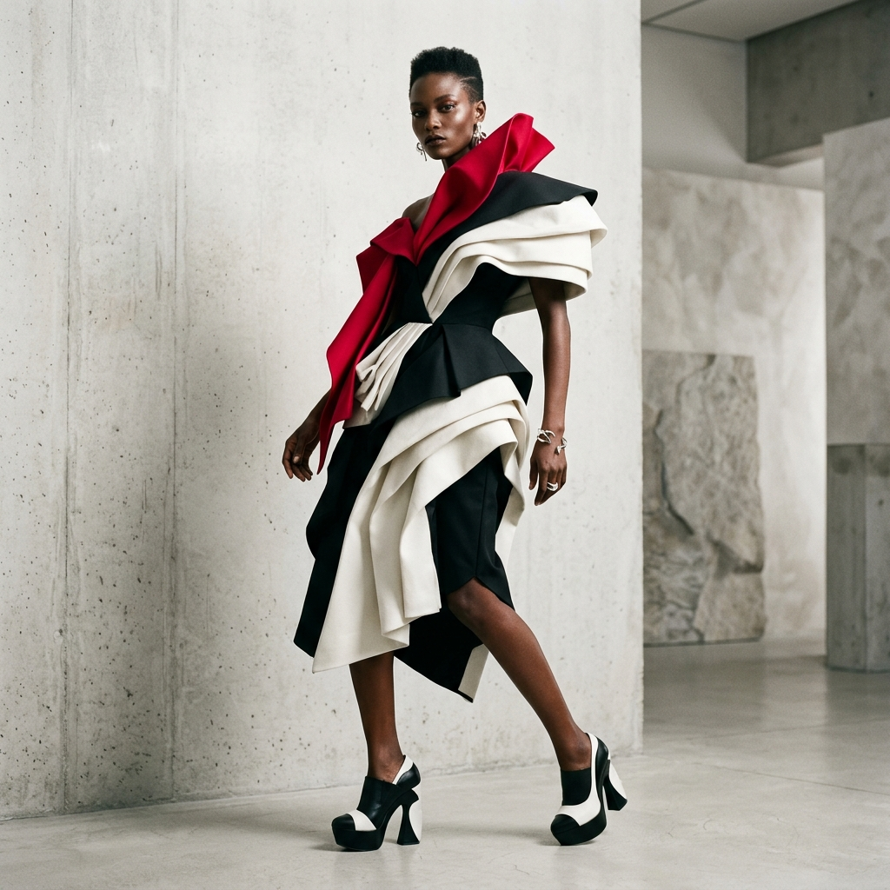

By utilizing a 12-column foundation, we can precisely place images and text. The `grid-row: span X` property allows the hero image to stretch downwards across the text sections without breaking the layout.
Resize the browser. The layout gracefully shifts from an overlapping asymmetrical grid on desktop, to a balanced flex-column layout on mobile, ensuring content remains legible on any device.
The juxtaposition of the highly decorative 'Cinzel' serif with the utilitarian 'Inter' sans-serif creates a tension that is a hallmark of modern high-end editorial design.